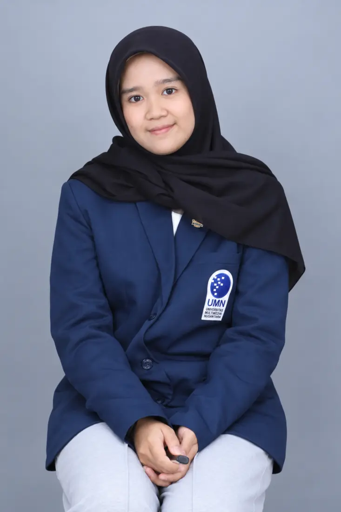
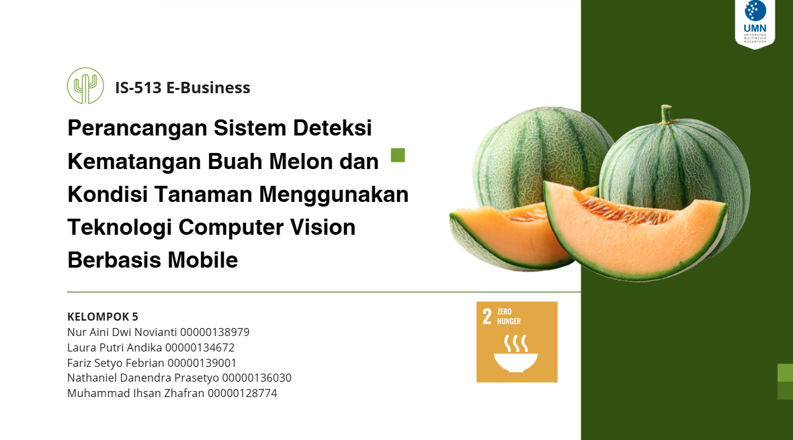
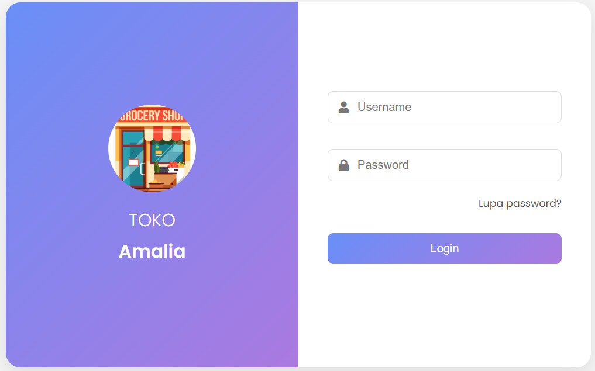
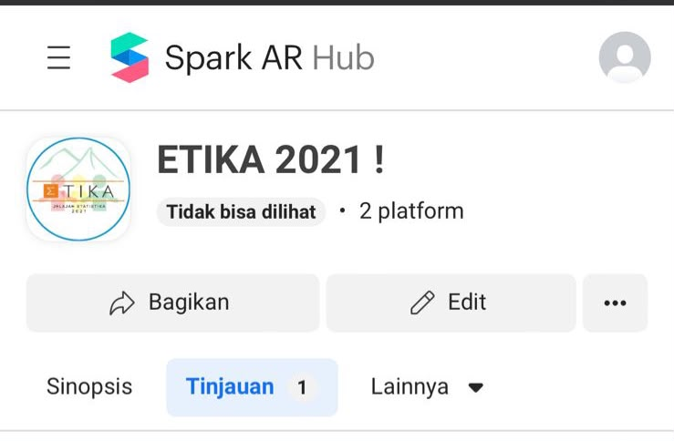
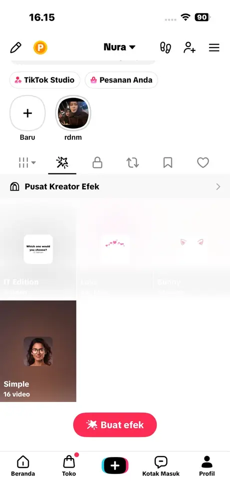

Universitas Multimedia Nusantara
Sistem Informasi
INFORMATION SYSTEMS STUDENT
Frontend Explorer
Hi, I'm Nuraa. I enjoy learning how thoughtful interfaces, clear structure, and small interactions can turn an idea into something people can actually use.

Frontend
in progress
Curious mind
thoughtful work
ABOUT ME
Hi, I'm
Mahasiswa Sistem Informasi Universitas Multimedia Nusantara yang sedang mendalami frontend development, UI/UX, dan creative technology.
Saya aktif dalam organisasi mahasiswa dan terbiasa mengoordinasikan kebutuhan kegiatan, bekerja secara terstruktur, teliti, serta bertanggung jawab. Saya senang mempelajari hal baru dan berkolaborasi untuk menghasilkan solusi digital yang berguna.
Sistem Informasi
Ilmu Pengetahuan Sosial
Social media content & publication timeline
Financial records, paid promotion & sponsorship
PIC for 7 students in an EcoBrick project
Logistics for three major event series
SELECTED WORK
A collection of coursework, frontend experiments, UI/UX prototypes, and creative effects that show how I learn by building.
Website toko produk kreatif dengan katalog, pencarian, kategori produk, dan keranjang belanja berbasis local storage.
Prototype aplikasi pelaporan bullying untuk mahasiswa, dikembangkan dari riset pengguna dan studi aplikasi pembanding.
Website pelaporan bullying berbasis Laravel dengan autentikasi, pelaporan, unggah bukti, forum, edukasi, dan tracking.

04Prototype aplikasi mobile untuk mendeteksi kematangan buah melon dan kondisi tanaman dengan konsep computer vision.

05Sistem informasi penjualan yang pernah berfungsi untuk membantu pengelolaan produk, pemasok, transaksi, dan penjualan.
Mengolah materi menjadi empat konten video pendek yang komunikatif dan siap dipublikasikan di Instagram.
Arsip eksplorasi editing yang berkembang dari Cute Cut Pro ke Alight Motion dan Video Star.

08Filter Instagram untuk identitas visual acara ETIKA 2021 Universitas Islam Indonesia yang digunakan oleh lebih dari 50 peserta.

09Kumpulan efek visual dan interaktif yang dipublikasikan melalui TikTok Effect House dan digunakan dalam video pengguna.
FRONTEND FOUNDATION
FRONTEND FOUNDATION
PROGRAMMING
DESIGN
CREATIVE
VERSION CONTROL
ACADEMIC ACHIEVEMENT
SCIENCE COMPETITION
SCIENCE OLYMPIAD
HAVE AN IDEA OR OPPORTUNITY?
Saya terbuka untuk kesempatan belajar, kolaborasi proyek, dan pengalaman yang membantu saya berkembang di bidang frontend.
nur25112005@gmail.com ↗